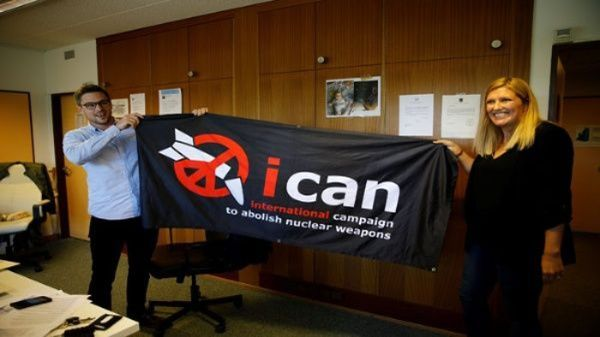

Definición de Premio Nobel de la paz
El Nobelpriset, mejor conocido en la lengua castellana como Premio Nobel, es el galardón anual que se otorga a las personas que han hecho grandes contribuciones a las ciencias y las humanidades, en las áreas específicas de física, química, fisiología o medicina, literatura, paz y el Premio en Ciencias Económicas en memoria de Alfred Nobel. Esté fue entregado, por primera vez, en el año 1901; este surgió como parte de la última voluntad de Alfred Nobel, un químico, ingeniero e inventor, quien fue logró constituir alrededor de 335 artefactos, siendo el más destacado la dinamita; este modificó su testamento en el año 1895 decidió modificar su testamento, indicando que se creasen unos premios con su fortuna.
Cada 10 de diciembre, se realiza una ceremonia en Suecia, en donde se les hace entrega a los ganadores los premios correspondientes en medicina, física, química y economía; los elegidos como ganadores son escogidos por La Real Academia de las Ciencias de Suecia. El premio Nobel de la paz, por su parte, se entrega en la ciudad de Oslo, en un evento completamente distinto; los ganadores son escogidos por el Instituto Karolinska. Alfred Nobel decidió, algunos años antes de su muerte, modificar su testamento y dirigir el 94% de su inmensa fortuna a la creación de una fundación que otorgase premios anuales a personas que hayan logrado importantes contribuciones, esta decisión fue motivada por un obituario que leyó cuando la muerte de su hermano ocurrió, y quien se le confundió con Alfred, en donde se anunciaba que “había muerte el mercader de la muerte”, en referencia a los artefactos que inventó.
Las instituciones que ya nombramos son las encargadas de escoger a los ganadores en las diferentes categorías que se relacionan con su área del saber.
Justamente, los miembros de dichas instituciones son quienes nominan a personas u organizaciones que realizaron durante el año descubrimientos y aportes importantes en ciencias, labor humanitaria o poseen una carrera destacada en literatura. Además de quienes pertenecen a las instituciones que nombramos, algunas ONG y reputadas academias a nivel mundial, también pueden enviar nominaciones.
Una vez que se establecen los nominados, un grupo de personas relacionadas con cada una de las áreas y que forman parte, en el caso de las ciencias, de la Academia Sueca de la Ciencia e Instituto Karolinska, votan para escoger al ganador.
Cada mes de octubre, se comunica quien o quienes resultaron ganadores de los diferentes Premios Nobel correspondientes a ese año y que se entregan en el mes de diciembre, en una ceremonia a realizarse en Suecia.
Quienes ganan un Nobel, reciben la noticia con horas de antelación del anuncio a la prensa, así se preparan para el bombardeo de entrevistas. Quienes sólo resultaron nominados jamás lo sabrán, ya que los nombres quedan sellados. Asimismo, bien vale la pena mencionar que además de los premios Nobel, también hay lugar para el humor dentro de la ciencia al elegirse los ganadores de los premios Ig o AntiNobel.
Ganadores Premio Nobel año 2014
- Física: François Englert y Peter Higgs, Premio Nobel de Física 2013 por sus ideas, formuladas independientemente, sobre cómo las partículas fundamentales adquieren masa.
- Química: Martin Karplus, Michael Levitt y Arieh Warshel, Premio Nobel de Química 2013 por el desarrollo de modelos multiescala para sistemas químicos complejos.
- Medicina: James E. Rothman, Randy w. Scheckman y Thomas C. Südhof, Premio Nobel de Medicina o Fisiología 2013, por sus hallazgos en los sistemas de transporte celular.
- Literatura: Alice Munro, Premio Nobel de Literatura 2013, por su maestría el relato corto contemporáneo.
- Paz: Organisation for the Prohibition of Chemical Weapons (OPCW), por sus prolongados esfuerzos para eliminar el uso de armas químicas.
- Economía: Eugene F. Fama, Lars Peter Hansen y Robert J. Shiller, Premio Sveriges Riskbank de Ciencias Económicas en Memoria de Alfred Nobel 2013, por sus investigaciones sobre el pronóstico de los precios de activos.
Ganadores Premio Nobel año 2013
- Física: Isamu Akasaki, Hiroshi Amano y Shuji Nakamura, por sus avances en el desarrollo de las luces LED
- Química: Eric Betzig y William E. Moerner y Stefan W. Hell, por el desarrollo de nuevos métodos para que los microscopios puedan ver detalles más pequeños.
- Medicina: John O´Keefe, May-Britt Moser y Eduard I. Moser, por sus descubrimientos sobre la representación espacial y posicionamiento en el cerebro.
- Literatura:Patrick Modiano, por el arte de la memoria con el que ha evocado los más incomprensibles destinos humanos.
- Paz: Malala Yousafzai y Kailash Satyarthi, por sus aportes a la defensa de los derechos humanos.
- Economía: Jean Tirole, por sus investigaciones sobre el poder y la regulación del mercado.
Ganadores Premio Nobel año 2012
- Física: Serge Hroche y David J. Wineland por la medida y manipulación de sistemas cuánticos individuales.
- Química: Robert J Lefkowitz y Brian K Kobilka por sus estudios sobre los receptores acoplados a la proteína G
- Medicina: Sir John B. Gurdon y Shinya Yamanaka por el descubrimiento de que las células maduras pueden ser reprogramadas para ser pluripotentes.
- Literatura: Mo Yan, quien con su alucinante realismo mezcla folclore, historia y hechos contemporáneos.
- Paz: Unión Europea, porque durante seis décadas ha contribuido al avance de la paz y de la reconciliación, de la democracia y de los derechos humanos en Europa.
- Economía: Alvin E. Roth y Lloyd S. Shapley por su trabajo en la teoría de las asignaciones estables y el diseño de mercado.
Ganadores Premio Nobel año 2011
- Física: Saul Perlmutter, Brian P. Schmidt y Adam G. Riess, por sus descubrimientos de la expansión acelerada del Universo a través de las observaciones de las supernovas.
- Química: Dan Shechtman por el descrubrimiento de los quasicristales.
- Medicina: Bruce A. Beutler y Jules A. Hoffmann por sus descubrimientos acerca de la activación de la inmunidad innata, ex aequo con Ralph M. Steinmann por sus aportaciones en el ámbito de la inmunología y de las vacunas.
- Literatura: Tomas Tranströmer, por el palpitante acceso a la realidad que proporcionan sus vívidas imágenes.
- Paz: Ellen Johnson Sirleaf, Leymah Gbowee y Tawakkol karman, por su lucha no violenta por el reconocimiento y respeto de los derechos de la mujer.
- Economía: Thomas J. Sargent y Christopher A. Sims, por su empírica investigación sobre causa y efecto en el ámbito de la macroeconomía.
- Jean Henry Dunant (1901)
Primer Nobel de Paz de la historia, compartió galardón con Frédéric Passy. Estuvo en la Batalla de Solferino (Ejército de Austria contra el francés), a partir de la cual escribiría un libro años después.
- Theodore Roosevelt (1906)
Presidente número 26 de Estados Unidos. Organizó una conferencia de paz en su país a la que invitó a los líderes de Japón y de Rusia, quienes en ese momento disputaban la guerra ruso-japonesa.
- Cruz Roja (1917, 1944 y 1963)
La entidad ha sido distinguida tres veces con este premio y es el nombre más repetido en la entrega del Nobel de Paz. Dichos reconocimientos han sido, especialmente, por su apoyo en conflictos bélicos: Primera Guerra Mundial (1917); Segunda Guerra Mundial (1944), y la última, en honor a su centenario (1963).
- Martin Luther King Jr (1964)
Por su campaña no violenta en contra de la segregación racial, la discriminación y la pobreza, entre otros asuntos, King obtuvo el Nobel de Paz en 1964 que, en ese momento, lo convirtió en el ganador más joven de la historia.
Ese mismo año se ratificó en EE. UU. la ley de derechos civiles, que permitió abolir la discriminación racial en el trabajo y en instituciones educativas.
- Madre Teresa de Calcuta (1979)
Nacida en Macedonia, cuenta que tuvo la llamada de Dios siendo muy joven y por ello renunció a todo para seguirlo: dejó el convento de Loreto y emprendió una vida al servicio de los pobres, principalmente, en los barrios de Calcuta, en India.
- Carlos Saavedra Lamas
(Argentina), 1936 Ganó el Nobel de la Paz en 1936 y fue el primer latinoamericano en ser reconocido con este galardón. Saavedra fue ministro de Relaciones Exteriores de su país, presidente la Asamblea de la Sociedad de Naciones (antecesora de Naciones Unidas) y mediador entre Bolivia y Paraguay después de la Guerra del Chaco, que transcurrió entre 1932 y 1935. El Comité Noruego le entregó el premio por sus contribución en las negociaciones de paz en este conflicto.
- Familia del Premio Nobel chino rechaza respiración artificial
La familia del disidente chino Liu Xiaobo rechazó que sea sometido a respiración asistida, aseguró este miércoles el hospital donde se encuentra internado por un cáncer de hígado en fase terminal, suscitando el temor de que pueda morir privado de libertad.
Al cabo de tres días de tratamiento intensivo, el Premio Nobel de la Paz 2010 "está en fallo respiratorio", indicó el Hospital Universitario Nº1 de Shenyang, en el noreste de China.
"El hospital ha explicado a la familia del paciente la necesidad de realizar una intubación traqueal" para someterlo a respiración artificial, pero ésta la rechazó, afirmó el centro en su página web.
El hospital, que previamente había informado de que Liu, de 61 años, sufrió un fallo multiorgánico, aseguró asimismo que el funcionamiento de su hígado se deterioró pese a tres días de tratamientos antiinfección.
"No tenemos ningún modo de tener noticias suyas directamente de él o de su familia, pero según el comunicado del hospital (...) es posible que Liu Xiaobo no sobreviva a las próximas 24 horas", declaró el disidente chino Ye Du.
- De sobreviviente de Hiroshima a nobel de paz
Setsuko Thurlow tenía trece años cuando la bomba atómica de Hiroshima explotó a menos de dos kilómetros de donde vivía el 6 de agosto de 1945. 72 años después de esa experiencia que marcó el fin de la Segunda Guerra Mundial, y su vida para siempre, recibirá este domingo de manos del Comité Noruego el premio Nobel de Paz, otorgado este año a la Campaña Internacional para Abolir las Armas Nucleares (Ican, por su sigla en inglés), una coalición de 468 organizaciones no gubernamentales que desde hace 10 años trabaja para crear conciencia sobre las catastróficas consecuencias humanitarias de cualquier uso de armas de este tipo. A sus 85 años, las memorias de ese día fatal siguen intactas, pero son el motor que impulsa su activismo para evitar que tragedias como las de Hiroshima y Nagasaki, que acabaron con la vida de cerca de 200.000 personas, vuelvan a repetirse. Un colombiano también participó en este proceso.
- Un Nobel de Paz que da un gran espaldarazo a los antinucleares
La Campaña Internacional para Abolir las Armas Nucleares (Ican) ganó el viernes el Nobel de la Paz tras una década de esfuerzos para prohibir la bomba atómica, en un contexto de tensión con Corea del Norte e Irán. Setenta y dos años después de las bombas atómicas estadounidenses sobre Hiroshima y Nagasaki, el Comité del Nobel quiso resaltar los incansables esfuerzos de la Ican para librar al mundo de las armas nucleares. Con ello mandó también un mensaje a las potencias nucleares para que inicien “negociaciones serias” destinadas a eliminar su arsenal. “Vivimos en un mundo donde el riesgo de que se utilicen las armas nucleares es más alto de lo que nunca fue”, declaró la presidenta del Comité Noruego del Nobel, Berit Reiss-Andersen.
- 'La presidencia de Trump pone de relieve el riesgo nuclear': ICAN
La Campaña Internacional para la Abolición de las Armas Nucleares (ICAN), que ganó el Premio Nobel de la Paz, dijo que este galardón respalda su lucha por "un mundo sin armas nucleares" y envía una señal muy clara a los Estados que aun las tienen y amenazan con usarlas. "Es inaceptable que aún haya países que tengan y que amenacen con usar las armas nucleares. El premio, además de un gran honor, es un mensaje muy fuerte a los Estados de que deben sumarse y abandonar las armas nucleares", afirmó en declaraciones a la prensa Beatriz Fihn, directora ejecutiva de ICAN. "Estamos en un momento crucial, el riesgo de guerra nuclear está otra vez en la agenda, con la posibilidad de asesinar a civiles de forma discriminada, con amenazas por parte de Estados Unidos y de Corea del Norte. Esto debe acabar, y el premio respalda esa posición", agregó Fihn.
| OBRA LITERARIA | AUTOR | AÑO DE PUBLICACIÓN | GÉNERO LITERARIO |
| Don Juan Tenorio | José Zorrilla | 28 de marzo de 1844 | Drama romántico |
| El viejo y el mar | Ernest Miller Hemingway | 1952 | Novela |
| La Divina Comedia | Dante Alighieri | 2007 | Narrativa poética |
| Divergente | Veronica Roth | 25 de abril de 2011 | Novela |
| Piedra, papel o tijeras | Inés Garland | 31 de Diciembre de 2009 | Novela |
| El jefe de la manada | Inés Garland | septiembre de 2014 | Ficción |
| The Maze Runner | James Dashner | 21 de octubre de 2009 | Novela |
| Crimen y castigo | Fiódor Dostoyevski | 1866 | Novela filosófica |
| Guerra y paz | León Tolstói | 1869 | Novela histórica |